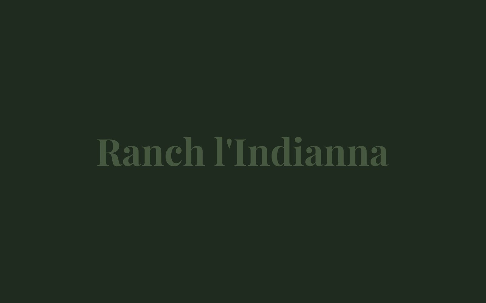
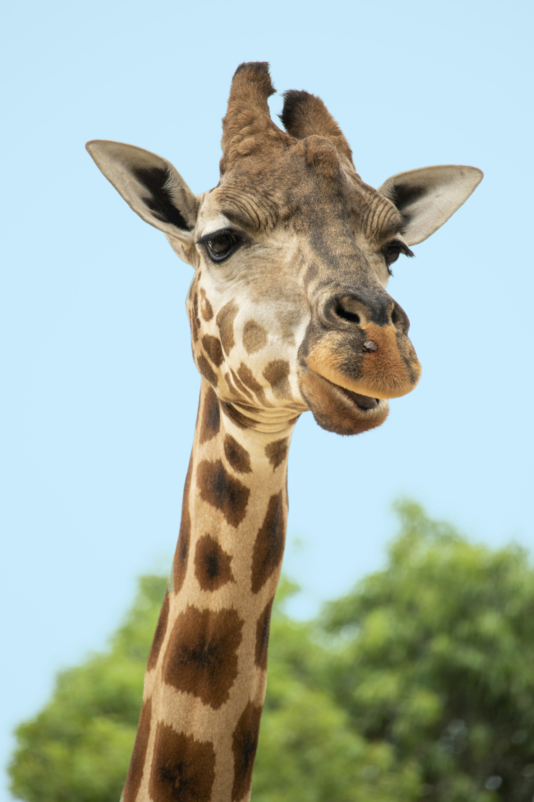
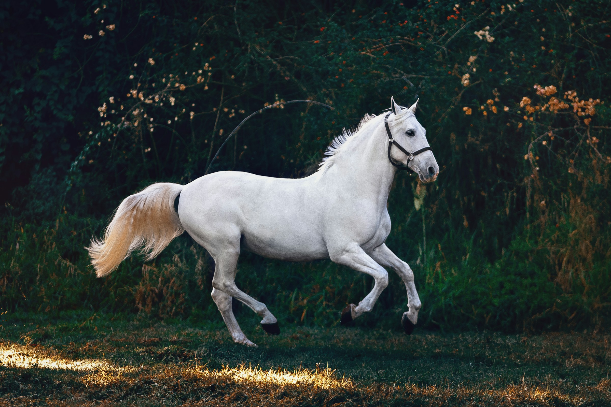
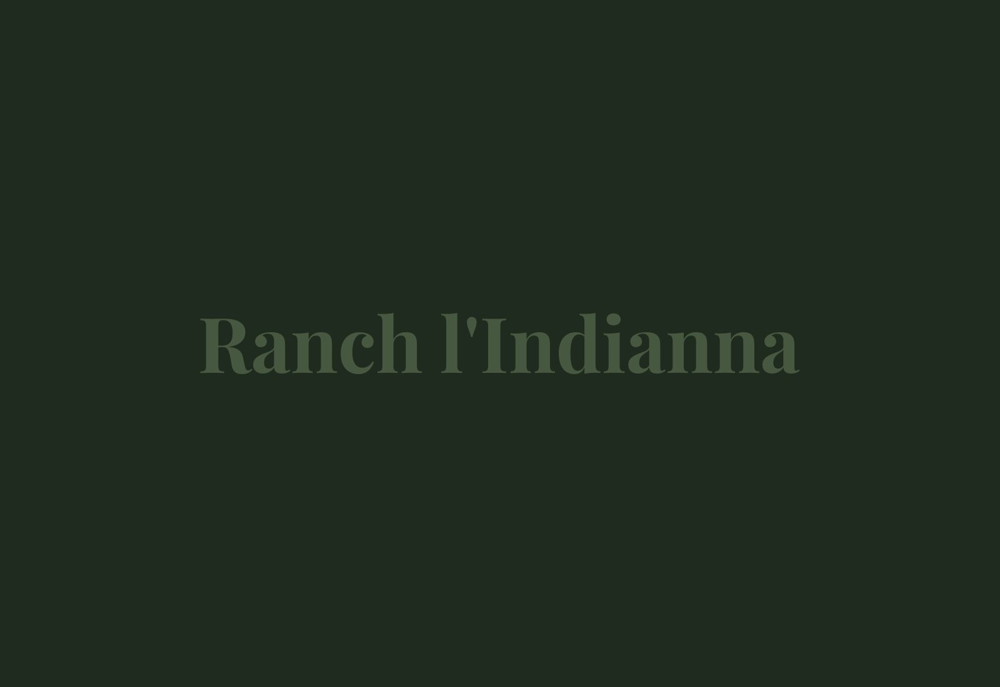
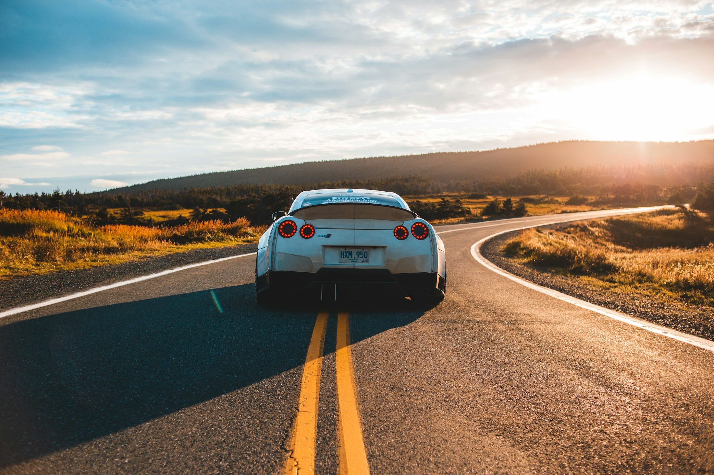

Balade maquis & plage
À travers le maquis parfumé jusqu'au littoral du golfe de Saint-Florent. La sortie qui donne le ton.
Débutants bienvenus
Sur réservation

Centre équestre · Oletta, Nebbio · Haute-Corse
À dix minutes de Saint-Florent, un ranch familial vous emmène à cheval dans le maquis parfumé, jusqu'à la plage. Et là, on entre dans l'eau, ensemble.
Le trajet
Une même balade, trois temps. On part du maquis parfumé, on descend par un petit chemin jusqu'à la plage de la Roya, puis on entre dans la mer avec les chevaux.

Le maquis
Départ à cheval dans les collines d'Oletta, entre maquis et vignes du Nebbio.
La plage de la Roya
Le chemin de crête descend jusqu'au sable, face au golfe de Saint-Florent.

La baignade
On entre dans l'eau avec les chevaux, souvent au coucher du soleil. Le moment que tout le monde retient.

L'expérience signature
Une balade de deux heures et demie dans le maquis, un petit chemin de crête, puis la plage de la Roya. On entre dans la mer avec les chevaux, au moment où le soleil descend sur le golfe. Une expérience rare en Corse.
« Une belle balade sur un petit chemin de crête jusqu'à la plage de la Roya. Puis un moment magique en se baignant avec les chevaux au coucher du soleil. »
L'équipe à quatre sabots
Nos chevaux sont choisis pour leur tempérament calme et leur sociabilité. Débutants comme cavaliers confirmés sont les bienvenus, chacun à son rythme.


★ Famille
Tours en main pour les enfants de 6 à 8 ans, en toute douceur. Nos deux poneys sont calmes et patients, parfaits pour un tout premier contact avec le monde équestre.
Le programme
Débutants bienvenus, sur réservation. On vous conseille la sortie selon votre niveau et la marée.
À travers le maquis parfumé jusqu'au littoral du golfe de Saint-Florent. La sortie qui donne le ton.
Notre signature. Balade de 2h30 à 3h, puis l'entrée dans la mer avec les chevaux quand le soleil descend sur la Roya.
Cap sur le Désert des Agriates à cheval, l'une des plus belles portions sauvages du littoral corse.
Une parenthèse nature pour souder une équipe, au rythme des chevaux et du maquis.
Le territoire
Maquis parfumé, vignes de Patrimonio, golfe de Saint-Florent et porte des Agriates. Le décor fait partie de la balade.
Les retours
4,9/5
62 avis Google
« Une belle balade sur un petit chemin de crête jusqu'à la plage de la Roya. Puis un moment magique en se baignant avec les chevaux au coucher du soleil. »
« Les balades dans le maquis c'est super et la baignade en mer avec les chevaux c'est magnifique. Le guide était très sympa. »
« Super ranch, très bel accueil. Personnel au top. C'est top pour de belles balades dans le maquis ou la baignade avec les chevaux sur la plage de la Roya. »
Sur réservation
Appelez-nous, on vous conseille la sortie selon votre niveau et la marée. La réservation se fait par téléphone.
Réserver par téléphone 06 21 90 26 86 Appuyez pour appeler